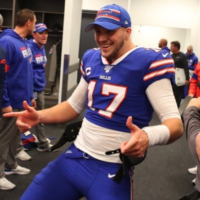
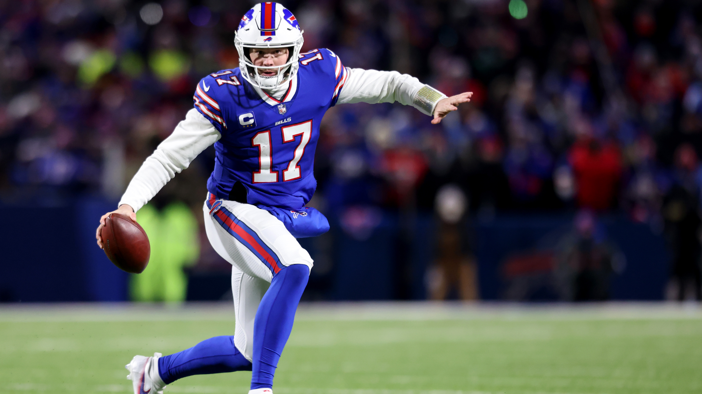

Joshua Patrick Allen

Josh Allen celebrates with the fans after the first of many touchdowns in their Wild Card game against New England.
Josh Allen a History:
Born on May 21st 1996, Josh Allen grew up on a cotton farm hear Firebaugh California. Allen played multiple sports in high school, while also working on his parents farm and a local resturant. Aside from football accolades, Allen won multiple awards for his agricultural work and knowledge during high school.

- 2014: After receiving 0 scholarship offers from any Division 1 schools, FBS or FCS, Allen attends Reedley College, a junior college.
- 2015: Allen transfers to Wyoming after his first season at Reedley. His season ends after 4 passes after a broken collarbone earns him a medical redshirt designation.
- 2016: Allen plays the entire season, throwing for over 3,000 yards and 25 touchdowns. He thought about entering the 2017 NFL Draft, but his dad encouraged him to stay one more year at Wyoming.
- 2017: Allen's senior year is a bit underwhelming compared to his previous season. He enters the draft at the seasons completion.
- 2018: Allen is drafted by the Buffalo Bills 7th overall. He flashes some big play ability, but still leaves many questions unanswered.
- 2019: Allen leads the Bills to ten wins and a playoff birth. They would end losing in the Wildcard Game. Allen season features more signs of progress, but questions still remain. "When will Allen take that next step?" is whispered amongst Buffalonians.
- 2020: Josh Allen takes the next step. Allen goes bananas, putting up 4,500 yards passing and 37 touchdowns. His rushing threat is evident, adding another 8 touchdowns on the ground. Allen and the Bills go all the way to the AFC championship game, but fall to the Chiefs.
- 2021: Allen continues to cement his place as one of the two best Quarterbacks in the league. Despite some struggles, Allen again throws for over 4,000 yards and 36 touchdowns. The season culminates in a hearbreaking loss at Arrowhead. The brightside the game is considered one of the greatest games ever, with Allen again dominating on the national stage.
